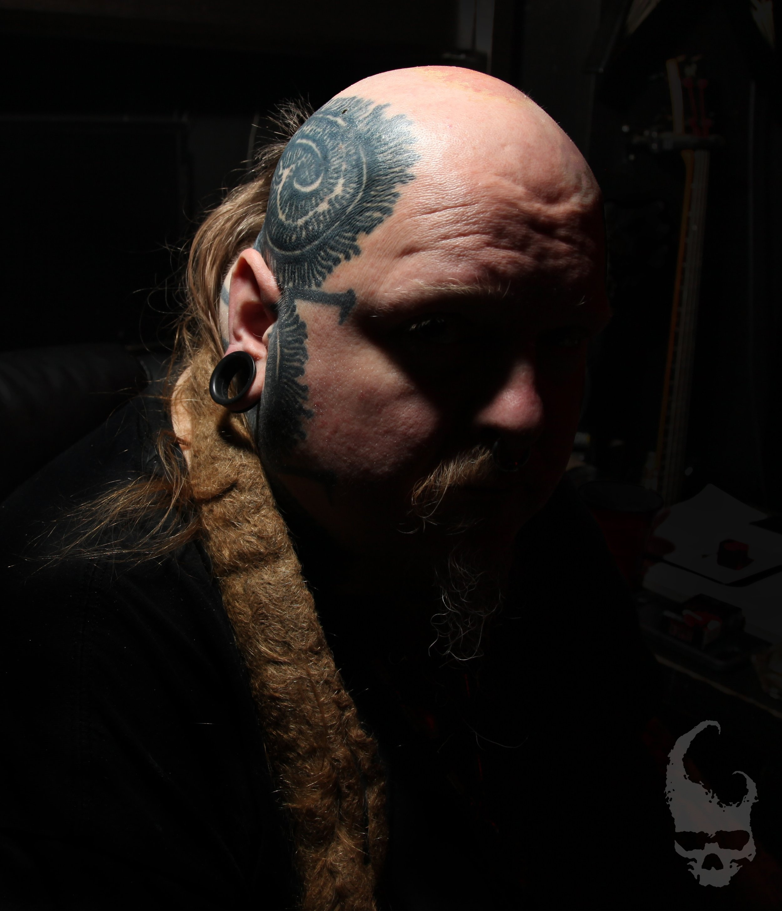

Send the Concept
Email your idea or theme, a photo of the area to be tattooed, and any budgetary information.
Dark Surrealism. Tattoo Legacy. Objects of Devotion.
Explore Fine Arts →112 works and films cataloged
Dark surrealist works formed from psychological pressure, ritual symbolism, organic distortion, and the confrontation of the human shadow. Explore the complete collection below.
01 / LEGACY
Freehand / Black & Grey / Large ScalePaul Booth's tattoo work merges anatomy, biomechanical form, psychological darkness, and the individual shape of the body into singular, site-specific compositions.
The Video Art section presents seven selected YouTube works in the same cinematic visual system as the Fine Arts collection.
Three-dimensional forms, jewelry, sculptural objects, and Ritean artifacts extending the visual language beyond canvas and skin.

PB / 001Nearly four decades at the crossroads of dark surrealism, gothic artistry, and countercultural defiance.
Paul Booth has forged a singular visual language that explores the macabre, the psychological, and the taboo. His work across canvas, skin, sculpture, film, music, and immersive environments confronts the shadowed recesses of the human condition.
Booth's early work emerged from a deeply personal need to give form to internal chaos. In the 1990s his visceral aesthetic reached the cultural mainstream through tattoo work for major figures in heavy music and performance. His Last Rites Tattoo Theatre & Gallery became a three-story Gothic landmark in Manhattan and a physical portal into his imagination. His work has since been exhibited internationally and featured across major publications, while the Last Rites world expanded into fashion, jewelry, home décor, film, and music.
Paul currently works in New Jersey, approximately 35 minutes west of midtown Manhattan.
Email your idea or theme, a photo of the area to be tattooed, and any budgetary information.
Paul works mainly freehand and develops your ideas through his own visual interpretation.
A $500 deposit holds the appointment and is applied toward the tattoo. Cancellations or rescheduling require 48 hours' notice.
Newark Liberty International Airport (EWR) is the closest airport. Large-scale work can move quickly; a back piece may be completed in 8–10 hours.
Original artwork, exhibitions, tattoo projects, licensing, press, and collaborations.